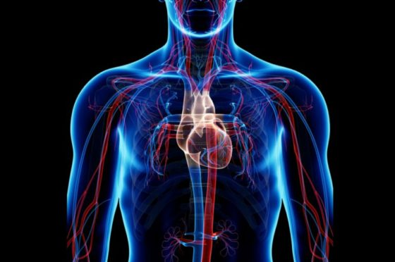

Sistema circulatori
Publicat 6 de maig de 2022
Aparell circulatori
Compost per conductes i vies on es realitza la circulació de la sang a traves de tot el cos .
Es divideix en:

FUNCIONS
EL COR:
És un múscul (estriat cardíac) que es contreu i es relaxa com una bomba i bombeja sang a la resta de l’organisme.
El cor s’estructura en:

El cor es divideix en dues cavitats: 2 superiors o aurícules i dos inferiors o ventricles.
Vàlvules que impedeixen el retorn sanguini entre aurícula esquerra i ventricle esquerra, 2 vàlvules mitral.
entre aurícula dreta i ventricle dret, 3 vàlvules tricúspide.
Circulació sanguínia

SISTEMA VASCULAR
Classificació de vasos sanguinis:
- Conducció: arteria aorta i pulmonar.
- Distribució: arteries de calibre mitjà que es ramifiquen.
- Resistència: arterioles.
- Intercanvi: capil·lars (intercanvi gasós).
- Retorn: venes i vènies que porten sang al cor.


CICLE CIRCULATORI


FISIOLOGÍA CARDIOCIRCULATÒRIA
Hemodinàmica estudia el moviment de la sang en l’interior dels vasos sanguinis.
- Pressió màxima: sistòlica (PAS) 120/140 mmHg.
- Pressió mínima: diastòlica (PAD) 60/90 mmHg
- Sistema nerviós vegetatiu: actua a nivell de despesa cardíaca, freqüència cardíaca, fza de contracció i resistència perifèrica.
- Regulació hormonal: augmenta i redueix el volum de sang a través de la hormona antidiürètica i la aldosterona.
- Sistema renal: regulació de la concentració de Na i d’aigua.
PATOLOGIES VASCULARS PER AFECCIÓ DE VASOS:
ANEURISMES: dilatació patològica de un segment de vas sanguini, especialment en l’arteria aorta. Són més freqüents en homes d’uns 60 anys amb HTA, fumadors + aterosclerosis. Els símptomes i la evolució depenen de la localització.
TRACTAMENT: mesures per controlar la HTA o tractament quirúrgic.
TRAUMATISME: lesió causada per un agent físic mitjançant una acció mecànica. Afecten a la xarxa vascular de forma més o menys greu i pot originar inflamació o infeccions.
PATOLOGIES VACULARS OBSTRUCTIVES
ASTEROSCLEROSI: Es produeix una disfunció endotelial i té lloc quan existeix una disminució en l’alliberació i/o activitat dels derivats de l’òxid nítric (NO) = relaxants de l’endoteli. Conseqüències de la disminució d’aquests: - Augment en la relaxació endotelial. - Augment de la permeabilitat de l’endoteli als leucòcits, especialment als monòcits, limfòcits T i plaquetes. - Alliberació de substàncies com prostaglandines així com del fibrinogen.
TROMBOSI: Oclusió per formació d’un coàgul anormal (trombo) en l’interior d’un vas sanguini sense que existeixi lesió de la paret del vas. CAUSES:
EMBÒLIES: És una oclusió parcial o total d’un vas sanguini degut a una partícula extranya circulant (èmbol) que, una vegada arriba a un vas sanguini de petit tamany, queda encaixada. Podem distingir entre: - Tromboembòlies. - Embolisme gras, aeri o gasós, sèptic, tissular, de cos estrany i de líquid amniòtic. TRACTAMENT: anticoagulants, angioplàstia, embolectomia i bypass. Embòlia pulmonar: si la irrigació és insuficient provoca infart pulmonar.
PATOLOGIES CEREBROVASCULARS
Els accidents vascular cerebrals (ACV o ictus) són interrupcions de la irrigació sanguinea en alguna part del cervell.
SIMPTOMES: - Hemiparèsia/ hemiplegia. - Disàrtria. - Dificultat al caminar, pèrdua d’equilibri o de coordinació. - Marejos, mal de cap intens i habitual, pèrdua de la visió. El factors de risc poden ser de dos tipus: - Modificables: HTA, tabaquisme, consum de greixos, DB, malalties cardíaques, alcohol, obesitat, sedentarisme o tractaments amb anticonceptius orals. - No modificable: edat, sexe, raça i antecedents familiars.
FISIOPATOLOGIES CARDÍAQUES
• ARRITMIES: trastorn en els batecs o en el ritme del cor. Es diferencien tres trastorns:
CAUSES: poden ser un signe de diferents trastorns, no sol cardiovasculars o pe run mal funcionament del sistema elèctric del cor.
• INFART DE MIOCARDI: lesió del miocardi (necrosis) per falta de aport sanguini.
La causa més habitual és un trombó que bloqueja la circulació d’alguna arteria coronaria per la presència de plaques ateromatoses.HIPERTENSIÓ ARTERIAL
Té lloc quan la pressió sanguínia és significativament superior al nivell normal.
Una tensió elevada continuada = greus danys.
HIPOTENSIÓ ARTERIAL
Té lloc quan la pressió sanguínia és significativament inferior al nivell normal.
Tipo de shock: